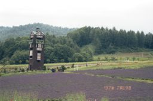
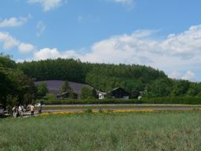
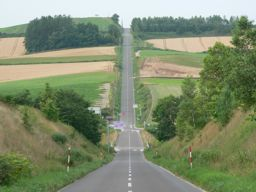
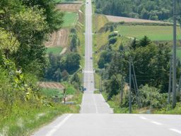
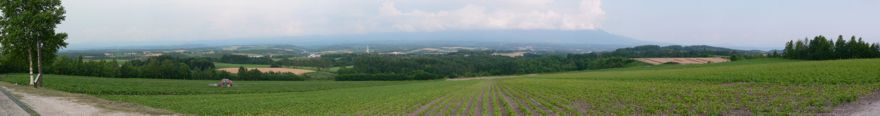

見知らぬ街にて

富良野
北海道の富良野といえば，ラベンダー畑で有名です。
ドラマ「北の国から」で何処までも続くラベンダー畑を見たとき，
一度は富良野を旅してみたいと思ったものです。
実は，90年代後半('98「時代」の少し前です)に，富良野を訪れる機会がありました。
ロードマップを頼りにドラマのロケ地とされた富田農場を目指しました。
確かに富田農場には，ラベンダーが植えられている場所がありました。
但し，ドラマで見たような見晴るかすラベンダー畑ではなく，
斜面の一画だけがラベンダーで覆われていました。
私の主観ですが，斜面のラベンダーと「北の国から」のイメージを結びつけることが出来ませんでした。
写真が残っていないか探したのですが，がっかりして撮る気にならなかったのか，
全く見当たりませんでした (^^;。
当時は芦別にカナディアン・ワールドというテーマパークがあり そこに植えられていたラベンダーの方が，「北の国から」で見たラベンダー畑に近いと思ったほどです。

当時は芦別にカナディアン・ワールドというテーマパークがあり そこに植えられていたラベンダーの方が，「北の国から」で見たラベンダー畑に近いと思ったほどです。
カナディアン・ワールド

10年ほど後に，再び富良野を訪れました。
富田農場は立派になっていました。
昔見たラベンダー畑は，確かこのあたりだったのではないかと思います。
画像の中央左の紫色の一画です。
その場所以外にもラベンダーが至る所に植えられており，
まさに「北の国から」で見たような光景が，広がっていました。
また，ラベンダー畑は，富良野の各地で見ることが出来ることが分かりました。
10年ほど後に，再び富良野を訪れました。
富田農場は立派になっていました。
昔見たラベンダー畑は，確かこのあたりだったのではないかと思います。
画像の中央左の紫色の一画です。
その場所以外にもラベンダーが至る所に植えられており，
まさに「北の国から」で見たような光景が，広がっていました。
また，ラベンダー畑は，富良野の各地で見ることが出来ることが分かりました。
富田農場
美瑛
最初に訪れたときは，富良野まで来て引き返してしまったのですが，
今回は富良野の北に位置する美瑛まで足を運びました。
美瑛は花畑ではなく，畑が広がっています。
美瑛を訪れるまで，ラベンダーの富良野に押されて，地味なイメージを思い描いていたのですが，
実際に訪れてみて，地味なイメージが吹き飛んでしまいました。
美瑛はアップダウンに富んだ丘が連なっていました。
複雑な丘に広がる畑は，農作物やその刈り取り具合で，様々な表情を見せてくれていました。


{kind=link}
{kind=link}
{kind=link}
{kind=link}
ジェットコースターの道
美瑛は丘陵地帯に広がっています。なだらかな丘というよりは，かなり起伏に富んでいます。 中でも極めつけは，「ジェットコースターの道」ではないかと思います。 真っ直ぐな一本道ですが，断面は，両端が "V"字の上端にあたり，中央が下端に位置します。 私達は，美馬牛駅側から「ジェットコースターの道」に入ったのですが， しばらく坂を登って視界が開けたとき，あまりの光景に「すごいねぇ」といいながら， 笑ってしまっていました。もう，笑うしかないくらいすごい坂道です。

美馬牛側からの眺め

富良野側からの眺め
美馬牛側からの眺め
富良野側からの眺め
この2枚の画像から坂を下って登るイメージを再現してみました。
BIEI PANORAMA
美馬牛駅側から「ジェットコースターの道」に入り，視界が開けたところで撮った画像です。
少しずつ回転しながら撮った画像を合成して，パノラマにしてみました。
